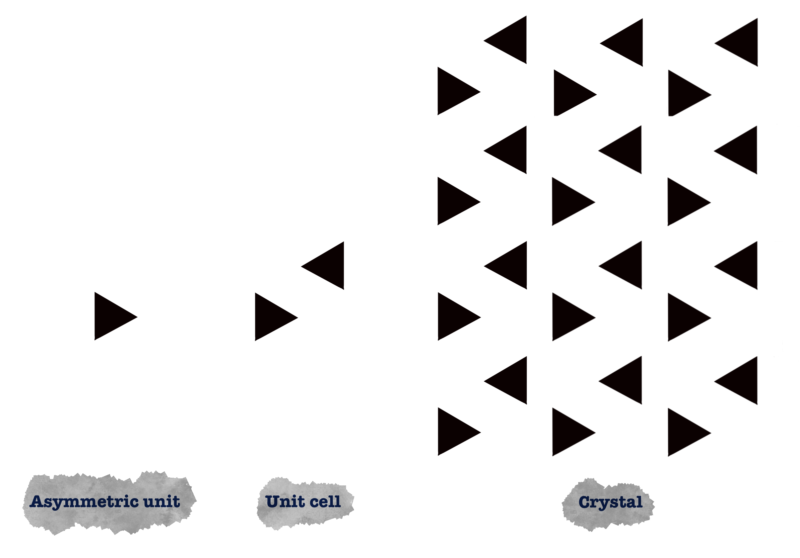

4.2.1. Asymmetric Unit Contents¶
The asymmetric unit or ASU is the smallest part of a crystal structure to which symmetry operations can be applied in order to generate the complete unit cell (the crystal repeating unit). The symmetry operations that are common for biological molecules are rotation, translation, and screw operations (which combine rotation and translation). It is important to note that molecules related by crystallographic symmetry are identical and have identical crystallographic environments.
{kind=link}
The ASU contains the unique part of a crystal structure.The ASU is what is contained in the model that crystallographers publish in the Protein Data Bank (PDB).
Note
ASU is not to be confused with the Biologically Functional Unit, which may be the same, but also smaller, or larger than the ASU.
A crystal asymmetric unit may contain:
one biological assembly
a portion of a biological assembly
multiple biological assemblies
There might be two or more independent molecules in each asymmetric unit. In this case, they do not have an identical environment and, moreover, they might differ in conformation. On the other hand, if a molecule occupies a special position (e.g., if a symmetry axis passes through a molecule, relating one part of the molecule to one or more other parts in that molecule), the unit cell contains fewer molecules than anticipated from the number of asymmetric units.
4.2.1.1. Matthews coefficient¶
Estimating the number of molecules in the crystallographic asymmetric unit is one of the first steps in a macromolecular structure determination. Distribution of V M , the crystal volume per unit of protein molecular weight, known as Matthews coefficient. A significant percentage of the volume of protein crystals is occupied by solvent ranged from 27% to 78%, with the most common value being about 43%. [Matthews 1968]. The Matthews Coefficient and solvent content are calculated from the unit cell and the molecular weight of the molecules in the unit cell.
The probabilities from the Matthews coefficient (P matthews) [Kantardjieff and Rupp 2003] gives the probability of a particular Matthews coefficient based upon the high resolution limit.